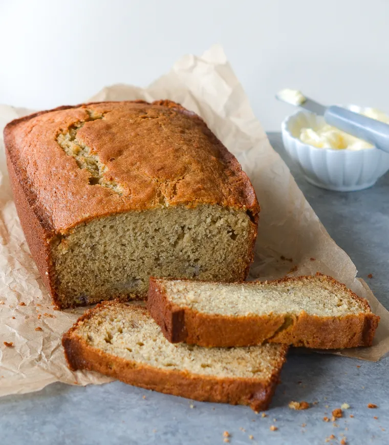

Banana Bread

Description
This banana bread has been the most popular recipe on Simply Recipes for over 10 years. Thousands of people make it every day. Why?
Because it really is the best banana bread recipe, period. You can mix everything in one bowl, you can vary the amount of sugar or bananas.
And the secret to its great flavor? Melted butter.
Ingredients
- 3 Very ripe peeled bananas
- 1/3 Cup melted, unsalted or salted, butter
- 1/2 Teaspoon baking soda
- 1 Pinch salt
- 3/4 Cup sugar
- 1 Large beaten egg
- 1 Teaspoon vanilla extract
- 1 1/2 Cups all-purpose flour
Method
Preparing Bread
- Preheat the oven to 350F, and butter an 8x4 inch loaf pan
- In a mixing bowl, mash the ripe bananas with a fork until completely smooth. Stir the melted butter into the mashed bananas.
- Mix in the baking soda and salt. Stir in the sugar, beaten egg, and vanilla extract. Mix in the flour.
Baking Bread
- Pour the batter into your prepared loaf pan.
- Bake for 55 to 65 minutes at 350F, or until a toothpick into center comes out clean.
- Remove from oven and let cool in pan for a few minutes. Then remove the banana bread from the pan and let cool completely before serving.